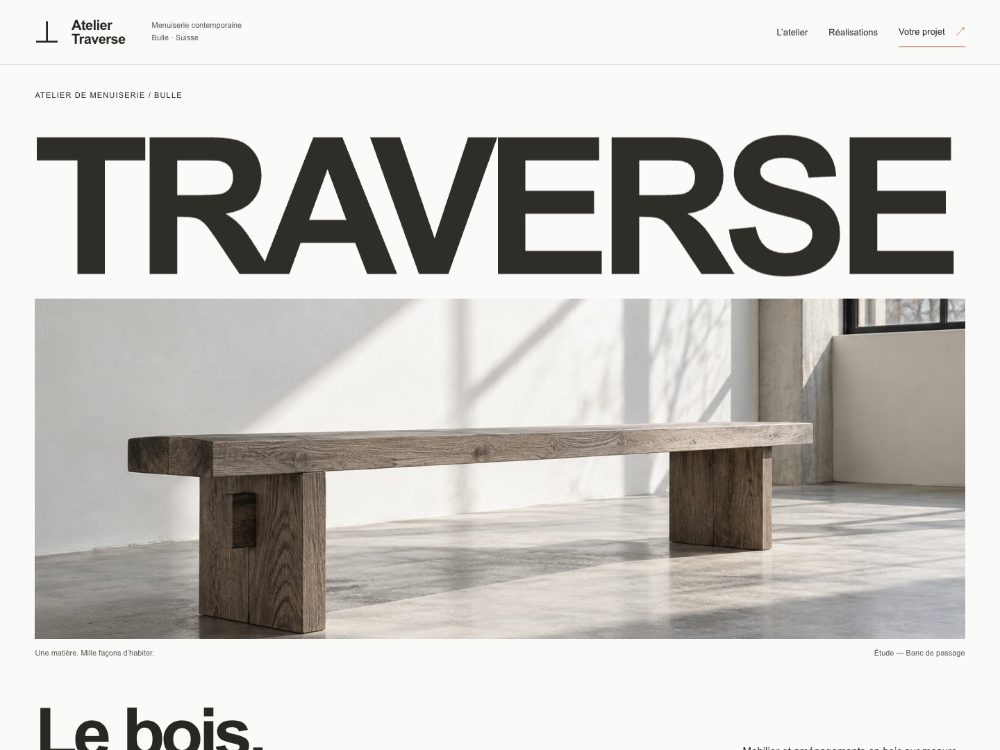

Atelier Traverse
Des rangements sur mesure, expliqués par l’image et le dessin.
Ouvrir la maquette
Les choix de conception
Le besoin
Présenter des aménagements et rendre leur usage facile à comprendre.
La réponse
Une identité dédiée, des images d’inspiration et des détails de conception à explorer.